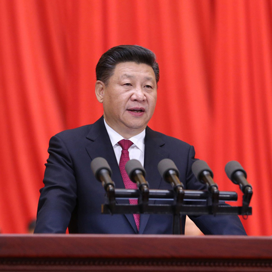
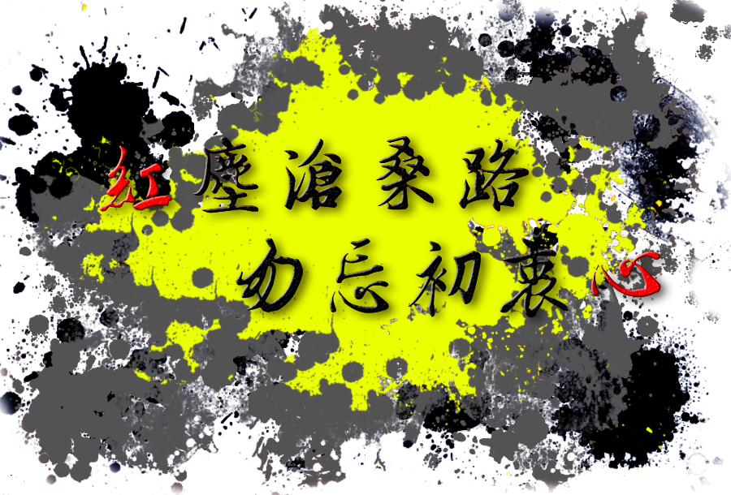

红尘沧桑路,勿忘初衷心
孟子在《鱼我所欲也》结尾愤而慨叹：“此谓失其本心。”
为了那些华而不实的宫室之美、妻妾之奉，又人几人同他一样在诱惑前能够“万钟于我何加焉”呢？
时间走过，曾经的人和事早已物是人非了，不敢奢求荒唐青春后一切如初，但愿疯狂过后，走散的我们能够不忘初心，坚持最初的信念，尊重最初的自己……
初心的坚守
不忘初心,是一个思想认识问题，也是一个实践问题
“不忘初心”，是习近平总书记近年来对全党反复强调的重要要求。在庆祝中国共产党成立95周年大会上， 习近平总书记第一次提出“不忘初心、继续前进”，指出“一切向前走，都不能忘记走过的路；走得再远、走 到再光辉的未来，也不能忘记走过的过去，不能忘记为什么出发。”党的十九大报告，把“不忘初心，牢记使 命”写入主题。十九大后，习近平总书记带领新一届中央政治局常委瞻仰中共一大会址时再次强调，共产党人 的初心永远不能改变，唯有不忘初心，方可告慰历史、告慰先辈，方可赢得民心、赢得时代，方可善作善成、 一往无前。习近平总书记今年“1·5”重要讲话中，指出要做到“三个一以贯之”，强调的也是对初心的坚守。
党的领袖如此强调“初心”的重要性，有着很深的意蕴。一个充满生机活力的政党，当然应是与时俱进、不 断创新的，但无论怎么创新、怎么发展，总有一些东西应当是一脉相承、永恒不变的。如同一个人不能数典忘 祖一样，一个政党同样不能忘记自己的根本，不能割断自己的血脉，不能改变自己的基因，不能忘记自己的初 心。当今时代是一个日新月异、变幻万千的时代，强调共产党人不忘初心，具有重要的现实意义。不忘初心， 是一个思想认识问题，也是一个实践问题，说到底是一个以知促行、以行促知、知行合一的过程。我们讲中国 共产党人不忘初心，从“知”与“行”的要求来看，重要的有四个方面。

人民网评：不忘初心，永葆青春 来源:人民网-观点频道
三个“永不动摇”
三个“永不动摇”是从历史演变中得出的深刻历史启示
是已被实践反复证明的历史真理
更是我们党、国家和人民在面向未来的伟大征程中立于不败之地的关键所在
我们已经比历史上任何时期都更接近中华民族伟大复兴的目标
面向未来，面对挑战，只有深刻领会并长期坚持三个“永不动摇”
才能筑牢民族复兴的强大根基

初心 |
峥嵘岁月，带走了很多东西，令我们来不及挽留，来不及补救，更来不及从头再来。坚定信念，不忘初心。 我们常常会把人生比作一条充满坎坷的未来之路。人们对这条路抱着希望，然而这条路是艰辛的。我们在路上走着走着，看着一个一个实现梦想的人，一个个对未来充满向往的人倒下。他们不是不想要未来。谁都想拥有一个称心如意的未来——可以挣很多的钱、不愁吃、不愁穿，衣食无忧。想必这也是每个人想要的。他们在路上碰上了绊脚石，没有爬起来，安于现状，满足于此时的生活。 |
| 那些取得成功的人总是不会忘掉自己心中的目标，向着目标在一步一步的用脚踩出自己的人生之路。“最清晰的脚印，就是走在最泥泞的路上。”这句话真是说明了人要不断磨练自己，才会变的更坚强，才能成为强者。 | |